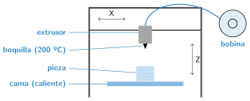
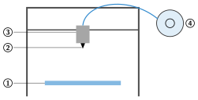

La impresora 3D de filamento
🤔 Pienso5 min
Qué hago aquí: Piensa un momento y contesta con lo que ya sabes. No pasa nada si no lo sabes: es para empezar.
La impresora usa un hilo de plástico enrollado. ¿Cómo crees que lo convierte en una pieza?
✏️ Puedes responder escribiendo, con un dibujo o un esquema, o contándolo en voz alta.
📖 Leo y aprendo15 min
Qué hago aquí: Lee despacio, mira los dibujos y los ejemplos, y quédate con la idea clave del final.
La impresora 3D funde un hilo de plástico y lo va poniendo capa a capa, de abajo arriba. Esta técnica se llama FDM.

La primera capa es la más importante. Para que se pegue bien, la boquilla debe estar igual de cerca de la cama en todos los puntos. Ajustarlo es nivelar la cama.
✏️ Hago25 min
Qué hago aquí: Haz las actividades en orden. Empieza siempre por las básicas.
Escribe el nombre de cada parte de la impresora.

1: 2: 3: 4:
¿A qué temperatura funde la boquilla el PLA?
Con tu grupo y con el profesor, nivela la cama con un folio.
Con tu grupo, cambia el filamento. ¿Qué paso os ha costado más?
✏️ Puedes responder escribiendo, con un dibujo o un esquema, o contándolo en voz alta.
Una pieza salió con hilos sueltos y despegada de la cama. ¿Qué pudo pasar? ¿Cómo lo arreglas?
🚀 Amplío (si quieres saber más)
Qué hago aquí: ¿Has terminado? Lee la curiosidad o elige el reto. Es voluntario.
La impresora se mueve en tres direcciones: X, Y y Z. Observa la del taller y escribe qué parte se mueve en cada dirección.
✅ Compruebo5 min
Qué hago aquí: Contesta sin mirar la ficha y marca cómo lo llevas.